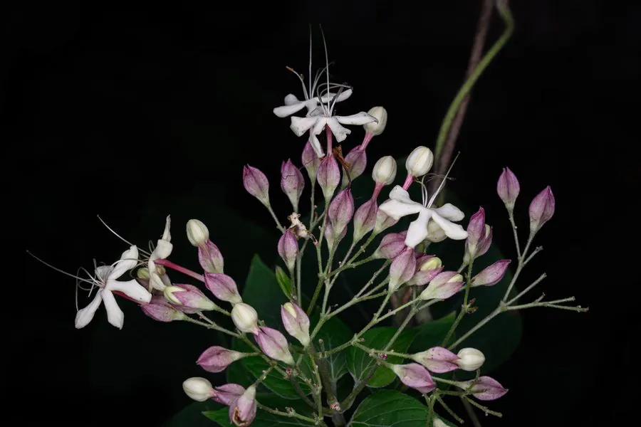

灌木与花木 · 植物界
海州常山 Clerodendrum trichotomum

唇形科大青属落叶灌木，花冠白色、花萼紫红，果熟时花萼变红并托着蓝紫色核果，是秋季观花观果的优良树种。
- 分类
- 门被子植物门纲木兰纲目唇形目科唇形科属大青属
- 栖息环境
- 山坡、路旁与林缘，喜光、耐旱、耐瘠薄，对土壤要求不严
- 地理分布
- 中国华北、华东、华中、西南及朝鲜、日本
- 保护级别
- IUCN 暂无评估；分布广，野生种群稳定
物种志
海州常山为落叶灌木或小乔木，高 2–4 米，树皮灰褐色，幼枝被柔毛。叶片对生，三角状卵形至卵形，长 8–15 厘米，边缘全缘或具疏齿，揉碎有明显臭味。聚伞花序顶生或腋生，花冠白色，花萼紫红色，花丝细长伸出；核果球形，成熟时蓝紫色，基部托以增大的红色花萼。
本种分布于中国华北、华东、华中至西南，也见于朝鲜、日本，生于山坡、路旁与林缘，喜光、耐旱、耐瘠薄，对土壤要求不严。它花期在夏末，果熟时蓝果红萼相映，是秋季少见的观果灌木；根、叶、花均可入药，中药“臭梧桐”即取自本种，有祛风除湿、降血压之效。因叶片揉碎有臭味，民间又称“臭梧桐”，但花果观赏价值很高。
形态与习性
- 株高2–4 米，树皮灰褐色
- 花期6–9 月，花冠白色、花萼紫红
- 果期9–10 月，核果蓝紫色
- 光照喜光，稍耐阴
- 水分耐旱，忌长期积水
- 土壤不择土壤，以疏松肥沃的壤土为佳
- 主要用途秋季观果、园林绿化与药用（臭梧桐）
趣味知识
- 海州常山的果实成熟时呈蓝紫色，基部花萼同时变红，蓝红相衬非常醒目。
- 它的叶片揉碎后有臭味，因此民间称它为“臭梧桐”。
- 中药“臭梧桐”即取自本种，传统上用于祛风除湿与辅助降压。
- 它的花冠白色、花丝细长，开花时像一群白蝶停在枝头。